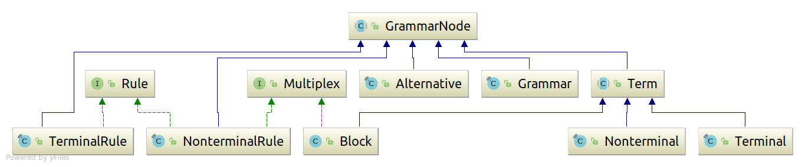

| Interface | Description |
|---|---|
| Multiplex |
A common interface for NonterminalRule and Block.
|
| Rule |
Common interface of TerminalRule and NonteriminalRule.
|
| Class | Description |
|---|---|
| Alternative |
The AST node for rule and block alternatives.
|
| Block |
The AST node for block terms.
|
| BuiltInTypes |
Built-in AST node types of NioGram and their names.
|
| Grammar |
The AST node for grammars.
|
| GrammarNode |
The abstract root of the AST type hierarchy.
|
| GrammarVisitor |
A visitor for the AST.
|
| Multiplex.Conflict | |
| Multiplex.ConflictK | |
| Multiplex.ConflictKL | |
| Nonterminal |
The AST node for nonterminals.
|
| NonterminalRule |
The AST node for nonterminal rules.
|
| Term |
Common superclass of the AST term types - Terminal, Nonterminal, Block.
|
| Terminal |
The AST node for terminals.
|
| TerminalRule |
The AST node for nonterminals.
|
tokens {Nonterminal, Terminal, TerminalRule}
grammar : nonterminalRule* TerminalRule*;
nonterminalRule : alternative+;
alternative : term*;
term : Terminal | Nonterminal | block;
block : alternative+;
Here the names match up to first letter capitalization
the names of the implementing Java classes. The tokens
represent leaf nodes of the AST. The EBNF occurrence
indicators in the source text of the grammar are represented
in the AST by attributes of the block nodes. For terminal and
nonterminal terms in the source of the grammar which have EBNF
occurrence indicators the NioGram parser creates enclosing
blocks and assigns correspondent attributes to that block.
Thus all terms with EBNF markup are represented by blocks.
In case that the term is EBNF-optional the parser inserts
an empty alternative in the block.
The type hierarchy of the implementation classes is as follows:

Grammar – related tools tend to have different conventions about the representation of the empty strings in grammar rules. Some use explicit epsilon symbol for that and others do not. NioGram adheres to the second convention and defines no explicit epsilon terminal in its AST model. Empty alternatives are literally empty rather than containing the epsilon terminal.
EBNF occurrence indicators have a representation in AST only for AST blocks. Therefore if other type of term (i.e. - terminal or nonterminal) has an EBNF occurrence indicator in the source text of the grammar then it is inserted into an AST block of its own. If an occurrence indicator in the source is one of ‘?’, ‘??’. ‘*’ or ‘*?’ then an empty alternative is inserted into the correspondent block.
For the sake of precision let us finally note that even though the AST is viewed mostly as a tree, technically it is a general directed graph. Rules contain references to all their instances on the right hand side of productions and instances contain references to their correspondent rule.
Copyright © 2018. All rights reserved.